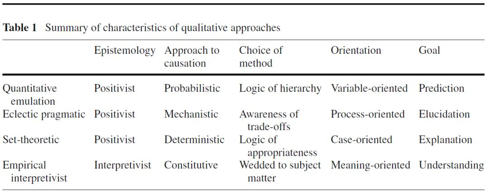

吾亦科学：定性研究中的四种类型
收录于合集
在国外，许多大学有关政治学的教学科研单位被称为Department of Political Science，人们不禁要问，政治科学中的“科学”应当如何理解——如果仅仅将“科学”定义为一般规律，定性研究的确不以追求具有普遍性的“恒常规律”为目标。但是即便是自然科学，如牛顿定律，也只是在某些条件下才适用。因此， “科学”的另一种含义指的是在经验研究中对严谨过程的追求。 之前政观编辑部推出了《比较历史分析应用指南》一文。小编正是想通过此篇文章说明，以比较—历史分析为代表的定性研究同样强调严谨的研究设计与因果推论，故而它们同样可以称之为“科学”。 小编力图想扭转以下这种错误观点，即只有量化研究甚至只有“看不懂的数字、公式和模型的研究”才称得上“科学”——这种看法本身就极不“科学”。
本次，政观编辑部向读者介绍定性研究的几种类型，其中虽涉及其他文献以及小编个人的观点，但主要依托的文献是于2015年发表在 _Quality & Quantity_一刊上的一文——Qualitative Variations: the Sources of Divergent Qualitative Methodological Approaches，作者Kendra L. Koivu与Erin Kimball Damman分别来自于新墨西哥大学（University of New Mexico）政治科学系和佛罗里达国际大学（FloridaInternational University）政治与国际关系学系。
如下图所示，本文最重要的一点贡献在于对定性研究进行了类型学上的划分：

****第一种类型称之为quantitative emulation ，即那些使用量化逻辑的定性研究，他们以变量为导向，并基于概论论的因果模式，此路径的最终目标在于预测。早期的经典现代化理论，如耳熟能详的“经济发展导致民主化”这一推论是这一类型的代表之一；亨廷顿的研究，从《变化社会中的政治秩序》到《第三波》也均秉持了这种思路，其核心概念如“制度化水平”与“政治秩序”都是线性相关的。 使用这种方法的研究其良莠分殊更为严重，其研究水准更取决于作者的睿智。 除了政治学界伟大的先知亨廷顿的作品——《文明的冲突》堪称 “21世纪头20年的世界政治路线图” 外，其余多如牛毛的预测性文献往往是驴唇不对马嘴。因此，小编觉得，定性研究中尽量不要使用“变量”（variable）这个词语。以定量研究中应用最为广泛的线性回归分析为例，研究者往往通过构建y = α + β1 x1 + β2 x2+…+ βi xi + ε来计算变量间的因果关系，其中因变量y受到x1、x2、…、xi等自变量的影响，自变量不可能既与结果正相关，又与结果负相关。然而在定性传统中，因果关系却体现了“非对称性”（asymmetric）：例如Wickham- Crowley在研究拉美革命运动中发现，“农民支持”这一因素是革命成功的必要条件，但这一因素也出现在了某些革命未发生的国家之中。
小编个人比较排斥这类研究方法，因为它体现了一种思维和技艺上的错位，即用相关思维去做小样本研究，极简的因果关系与极其有限的研究范围其结果往往与现实大相径庭。这种研究可以在学术发端的初期引起争论，但粗糙的分析有时过于肤浅，这也是为什么结构—功能主义在偃旗息鼓之后再无翻身之日。
第二种类型称之为eclectic pragmatic ，这是一种秉持折中主义和实用主义的研究方法，强调研究方法的多样性。同时，他们认识到了定量思维的不足，如Rethinking Social Inquiry（下文简称RSI）一书中里面对KKV的反思。蒂利晚年的研究（如对民主与社会运动如何生成）以及西伦（Kathleen Thelen）立足资本主义多样性视野下讨论的渐进制度变迁，都可以归为这一类型。他们强调案研究的意义，通过过程追踪（process tracing）或成对比较法（paired comparisons）发掘因果机制或因果进程，因此这一类研究是以机制（mechanism）为导向的。
在《制度是如何演化的》一书中，西伦并非着重讨论是什么因素原因导致了英国、美国和日本在职业培训制度上的差异，而是将重点放在“历史的动力塑造了国家和社会的组织结构”。因此，定性研究的第二种类型更加关注历史的细节。在学科互动日益频繁的今天，政治学的部分学者偏向了经济学阵营，而另一些则与社会学结盟。在历史研究中，历史学的基本元素是“事件”，而社会科学研究的基本元素则是概念以及变量/条件。值得注意的是，Mahoney与Felleti在“比较序列方法”（comparative sequential method）的中对“事件”（event）、“序列”（sequence）、“过程”（process）等概念的抽象化处理，也是一种政治科学研究对历史学的学习。
对历史的深入研究，必然涉及对当地语言的学习以及历史资料的收集。这里，小编很同意朱天飚、包刚升等老师的见解：一方面，比较政治学区分为区域研究和比较研究，前者一般专注于某一国别或地区，因此需要掌握当地的语言，而基于“比较”一般要根据自变量的变化选择案例，因此无法掌握全部案例中所使用的语言；另一方面，对历史的理解是历史学家的长项，政治学家则更擅长理论构建，因此社会科学在对待历史上完全可以取长补短。摩尔曾风趣的说，他在不懂中文的情况下完成了《专制与民主的社会起源》里有关中国部分的写作，以后的学者不能再这样做了。
第三种类型称之为set-theoretic ，这种基于集合论的研究以案例为基础。将集合论的思维引入社会科学研究，美国社会学家查尔斯·拉金（Charles Ragin）的贡献可谓居功至伟——作为QCA方法的开创者，拉金19岁便获得学士学位，22岁就完成博士论文答辩。
这类研究涉及与“原因”（cause）一词的再思考。 当我们说X是Y的原因时，“原因”这个词可能包含了五种不同的理解：必要条件、充分条件、充要条件、INUS条件以及SUNI条件 ，由于社会科学研究中几乎不存在充要条件，因此我们所说的“原因”主要有如下四种： （1）“X是Y的充分条件”等同于“X是Y的子集”； （2）“X是Y的必要条件”等同于“Y是X的子集”； （3）X 1 is an INUS cause of Y1 if the overlapping set created by X1 and one or more other causal factors is a subset of Y1，例如斯考切波认为“国家崩溃”与“农民起义”的结合导致了社会革命的爆发，因此“国家崩溃”和“农民起义”是“社会革命”的INUS； （4）X 1is a SUIN cause of Y1 if Y1 is a subset of the jointspace created by X1 when combined with one or more other causalfactors，例如摩尔著名的论断——“没有资产阶级就没有民主”，表明强大的资产阶级是民主的必要条件，而资产阶级的强大可能体现在政治层面也可能体现在经济层面，因此，资产阶级在政治或经济上获得权力是实现民主的SUIN条件。
重思社会科学研究中对“原因”的定义，可以回应一些定量传统对定性传统的质疑，如选择性偏差（selection bias）。格迪斯（Barbara Geddes）在《范式与沙堡》中质疑了劳工压迫对高经济增长的作用，因为通过二元回归显示劳工压迫与发展之间并无显著的相关关系——之前的研究者在样本选取中仅仅关注了那些实现增长的国家而忽视了绝大部分发展中国家。这种“选择性偏差”其实并不奇怪，因为劳工压迫对发展的影响取决于其他变量的情况，尤其是在一个新兴发展国家，当廉价劳动力的供应充足、存在强有力的劳动密集型出口的市场时，对劳工的压迫有助于发展，但在其他情境中则并非一直如此。在定性研究的传统中，劳工压迫也是发展的“原因”，只不过是作为INUS条件存在。
以上三种类型在认识论上均秉持实证主义的风格，认为现实的本质是客观的、实存的——相反， 定性研究的第四种类型empirical interpretivist 则认为现实世界的真相是由人主观构建出来的，他们认为社会科学应该放弃对某种虚假真理的追求，而将重点放在对社会历史情境的理解。 他们目的在于理解和厘清特定人类活动在特定文化场域中的含义，在方法上避免跨案例比较和大样本分析，而往往采取个案分析。 虽然这种基于解读传统的认识论有时不被认为是定性研究，但是两位作者认为由于此类研究深入案例内部，且运用诸如过程追踪以及其他案例研究的方法，因此经验性的解释主义路径与其他三类基于实证主义的定性研究路径有某些相通之处。在当代比较政治学的三大流派中，许多采取文化主义路径的研究采取了这种类型。小编个人对这种类型知之甚少，因此不宜过多评论。在赵鼎新教授看来，以理论为指导的“解读方式”（interpretation tradition）存在以下弊端： 首先，运用这种方式所做的分析往往只是抓住了不重要的侧面甚至是假象，并很难实现纵向的学术积累；其次，因为先有一个框架和理论假设，所以这类很容易发生削足适履的感觉，一些学者不得不依靠其晦涩的理论与绚丽的语言来掩饰其内容的贫乏与空洞，进而落入“玄谈”的窠臼。
KKV认为，定量与定性的不同，顶多体现在研究风格与特定技术层面。但就分析问题的逻辑而言，二者并无区别；RSI并不认同这样的观点，却认可社会科学即运用了不同的方法也都在追求统一的标准（shared standard, diverse tools）。然而，这个统一的标准又是什么呢？它是否适用于所有的政治科学研究？RSI即便是降低了“统一标准”的界定，但其某些操作。依旧是秉持KKV传统的学者不能容忍的。针对定性研究内部，作者提出的观点是diverse standard, shared tools。例如在对《变化社会中的政治秩序》的评论中，Richard Bendix认为亨廷顿将革命、起义、叛乱、政变、独立战争等等众多相互独立的事件纳入了统一的分析图景，从而导致每个论述都太过简单，反而不如减少独立事件的数量以使研究更加深入充分；但Harvey G. Kebschull则认为，由于政治发展这一议题太过宏大，读者们总会觉得某些重大问题没有加以讨论，因此提供一个全景式的分析是很有必要的。两位学者的评论并没有诘难亨廷顿的研究工具，其分歧在于对简约性还是精确性的追求，在不同的标准下学者们采取了不同的解决方案。
研究方法上，两位作者认为 尽管从事定性研究的学者们所采纳的标准不同，但是他们却使用着相似的工具，包括案例研究、比较与历史分析、过程追踪以及反事实分析等。 例如，四类定性研究均采取反事实分析。为了检验X是否导致Y，反事实思维假设了一个想象的世界，其中X不存在进而确定Y是否发生。John Gerring将反事实分析看作重复实验的替代性方案，研究者可以借此操纵变量以观察其对结果的影响；Gary Goertz与Jack Levy进一步提出，只有“必要条件”这一种原因类型可以通过反事实分析来识别；Audie Klotz将反事实分析、过程追踪甚至统计分析视作建构主义的方法论选择。
这意味着， 由于定性研究内部也存在诸多区分，因此知道什么是好的研究就显得格外重要，尤其是研究者要追求哪一种标准 ；同时， 针对研究从未打算实现的标准所进行的批评显然是不正确的，例如我们不能因为解释主义未能实现实证主义的外部有效性而斥之为荒诞。 当然，作为一个几乎偏执的希望定性研究科学化的研究者，小编当然是更加推崇第二以及第三种类型的作用。然而，这也只是一家之言，因此 我们诚挚欢迎各种建议与意见，尤其是批评性的看法，这些意见极大的丰富了我们的知识体系；同样欢迎来自各方面的争鸣，热烈的争辩终归是胜过无声的和谐。
正如政观在之前推送中反复提到的，纯粹的方法论之争只是意气用事，对推动中国政治学研究并无助益，小编真正忧虑的也并非是定性研究抑或比较—历史分析能够独占鳌头（ 当然希望它们能够发扬光大——至少不会像在美国那样被如此边缘化 ），而是无奈于当下存在的对科学的两种偏见——“拒斥”与“迷信”： 一方面，依旧有极多极多的学者将社会科学方法论看作“奇巧淫技”，甚至将人类历史长河中昙花一现的政治学说和政治思想奉为“金科玉律”，“不可改一字”，以所谓玄学思维来批判科学思维， 用所谓玄学思想来拼命抵制社会科学研究方法 ；另一方面，不少高校和年轻学者已经完全匍匐在“ 量化至上”的王座之下了，甚至以“xxx连定量方法都不会”作为招录、评价乃至考核学人的标准。须知， 衡量社会科学成就的最高标准，是其对我们身处其中的社会结构的认识所带来的实质性启示。
如果说对科学的“迷信”或“拒斥”属于个人认知上的好恶或者偏差，那么为了个人得失，明知研究可能存在问题，却不惜屈服于权力的傲慢与意识形态的偏见，用“玄学”或者“科学”的外表去掩盖社会科学的本质，其目的显而易见。在他们眼中，实事求是的治学底线并不重要，站队、混圈子、传八卦、阿谀逢迎、首鼠两端、投机钻营，进而发表越来越多的论文才是他们学术事业的核心。
想象权力近乎无所不能，以及因为接近权力，或被权力亲近而欣喜不已。于是，小编想到了前几天俞可平教授在《重回北大》采访录的结尾所说的话：“官员和知识分子应当站在大多数人民的立场说话办事，不能为了自己的私利而失去良知的底线。”
政观编辑部
感谢您支持学术公益
微信扫一扫赞赏作者 __赞赏
已喜欢，对作者说句悄悄话
取消 __
发送给作者
发送
最多40字，当前共字
上一页 1/3 下一页
长按二维码向我转账
感谢您支持学术公益
受苹果公司新规定影响，微信 iOS 版的赞赏功能被关闭，可通过二维码转账支持公众号。